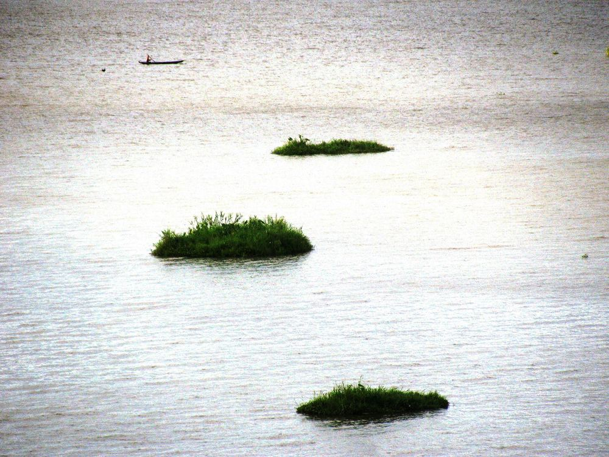
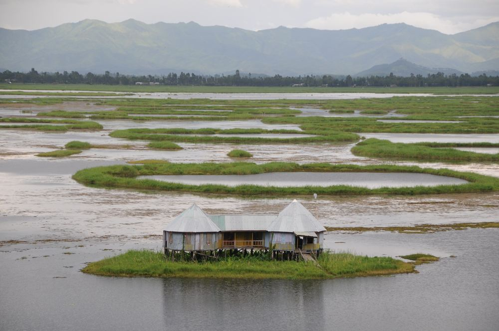
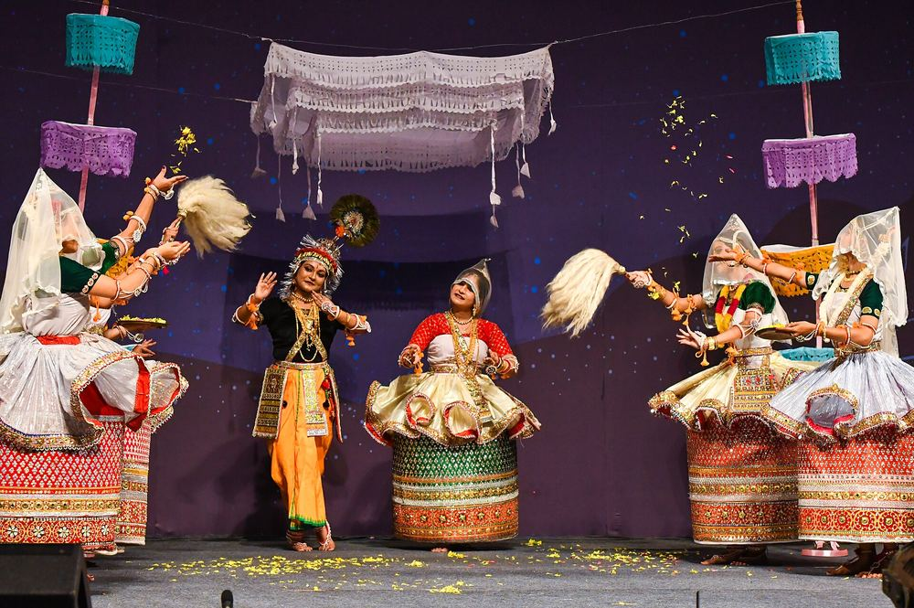
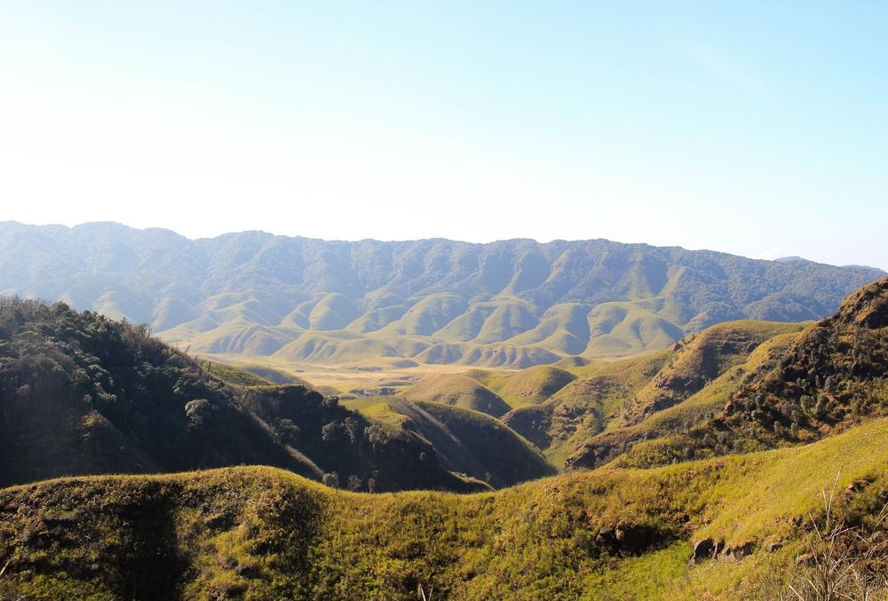
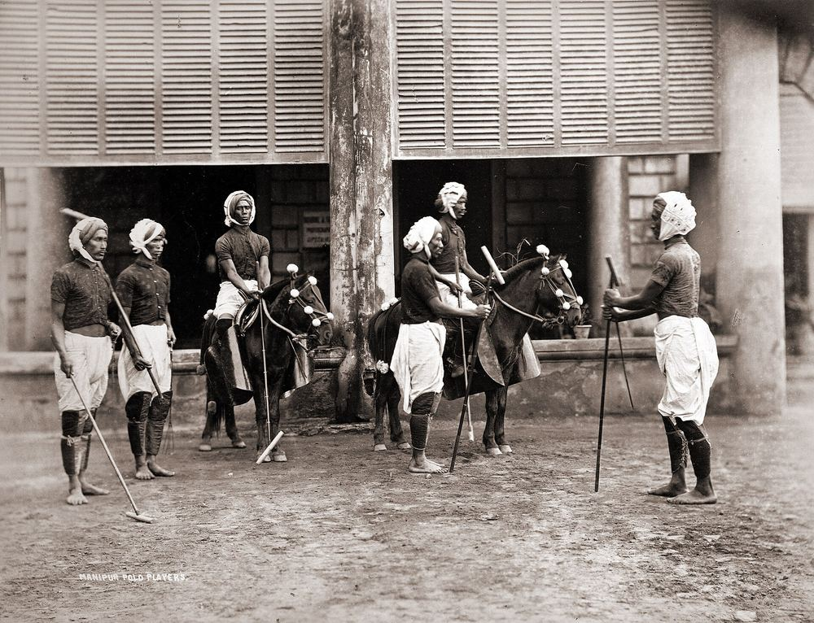
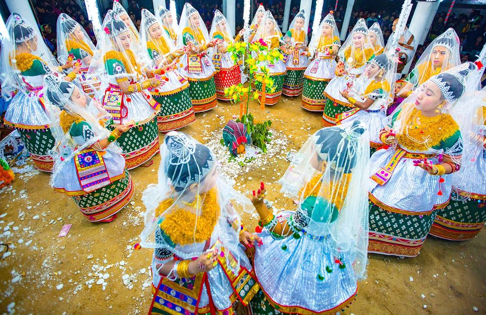
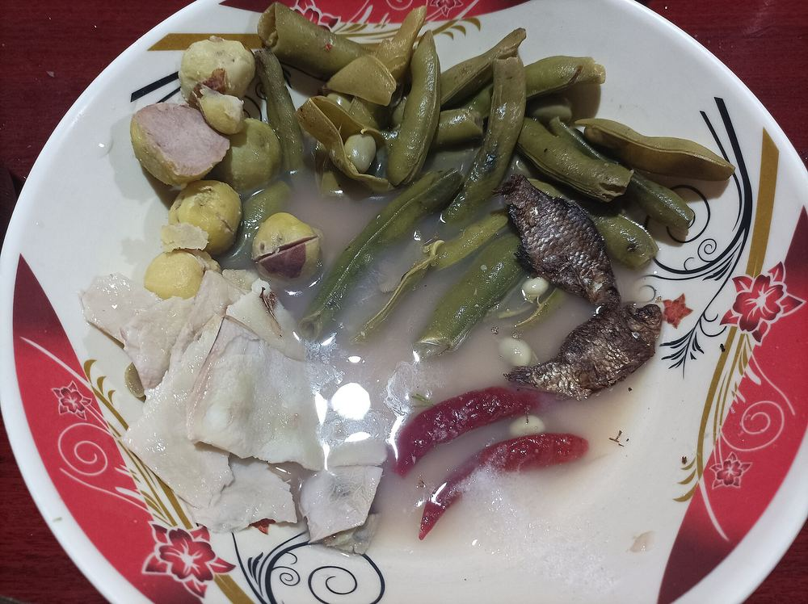
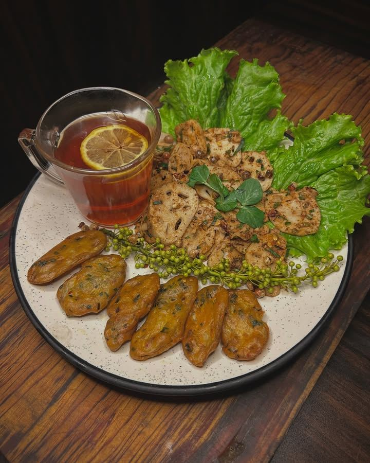
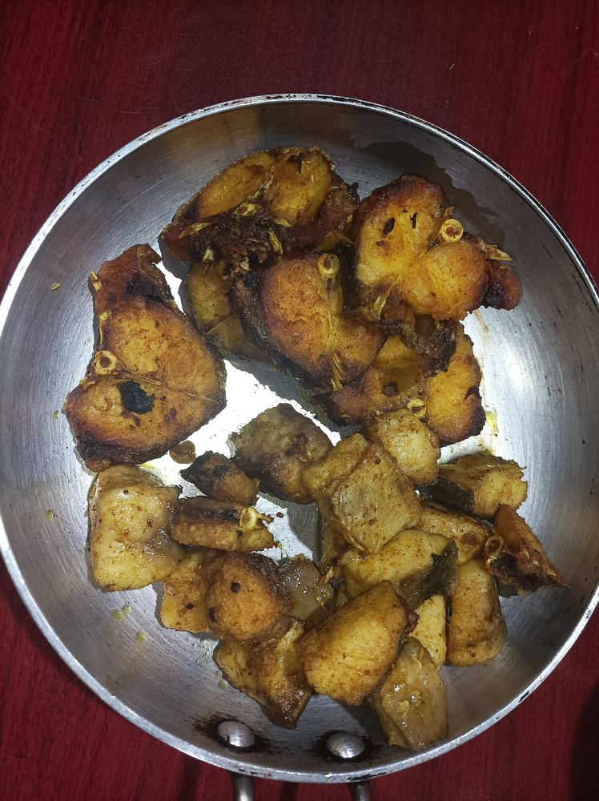
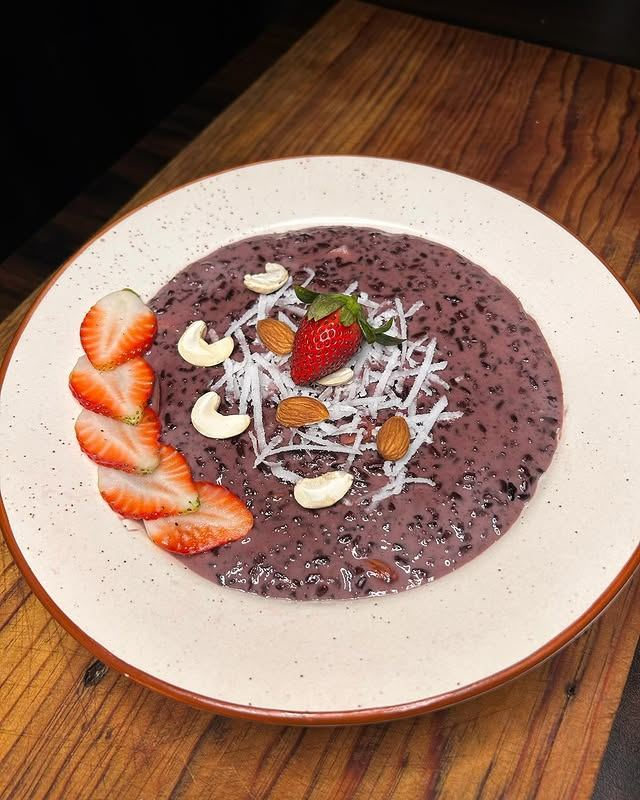

40 km² that float
Keibul Lamjao rests on phumdis, mats of soil and plants drifting on Loktak Lake. It is the world’s only floating national park and the last wild home of the endangered Sangai deer.

Floating lakes, sacred dances and hills wrapped in cloud.
A fisher’s hut on a floating phumdi, Loktak Lake.
See all placesAn oval valley ringed by nine hill ranges on the Myanmar border, with floating islands, living temples, all-women markets and the game the world now calls polo.

“A pretty place, more beautiful than many show places of the world.”

Dzükou Valley, on the Manipur–Nagaland border

Keibul Lamjao rests on phumdis, mats of soil and plants drifting on Loktak Lake. It is the world’s only floating national park and the last wild home of the endangered Sangai deer.
In the heart of Imphal, Ima Keithel is one of the largest all-women markets in Asia. Thousands of imas trade fish, handloom and spices, as their mothers did before them.

Modern polo grew from Sagol Kangjei, played on Manipuri ponies. British officers learned it here in the 1850s, and Imphal’s Mapal Kangjeibung is counted among the oldest polo grounds in the world.

Manipuri Ras Leela is one of India’s classical dance forms: slow, devotional and luminous, danced in barrel-shaped potloi skirts that glitter with mirror-work.
Live weather and local time in the capital, and how long until the Sangai Festival opens.
…
Weather in Imphal
Loading the latest forecast…
…
Local time
Manipur runs on India Standard Time (UTC+5:30). The sun rises early here, around 5 a.m. in summer.
Manipur’s calendar follows the moon, the harvest and the gods. Time your visit with one of these; exact dates change each year.
Five days of colour, bonfires, sport and the Thabal Chongba moonlight dance.
The "merrymaking of the gods", with maibi priestesses re-enacting creation in dance.
Ukhrul celebrates its state flower with music and Tangkhul Naga culture.
The harvest festival of the Kuki-Chin-Mizo peoples: songs, dances and thanksgiving.
The state’s biggest showcase of crafts, cuisine, sport and performance.
Sharp with king chilli, fragrant with herbs and fermented fish, and sweetened with black rice.

Boiled vegetables mashed with ngari and fiery chilli.

A crunchy, spicy salad of lotus stem, cabbage and herbs.

Fish fried or roasted until crisp, a staple of the valley.

Pudding of aromatic black rice, deep purple and nutty.

Sunset over Loktak Lake
Build a day-by-day itinerary for the valley and the hills, and see what to pack and which permits you need.